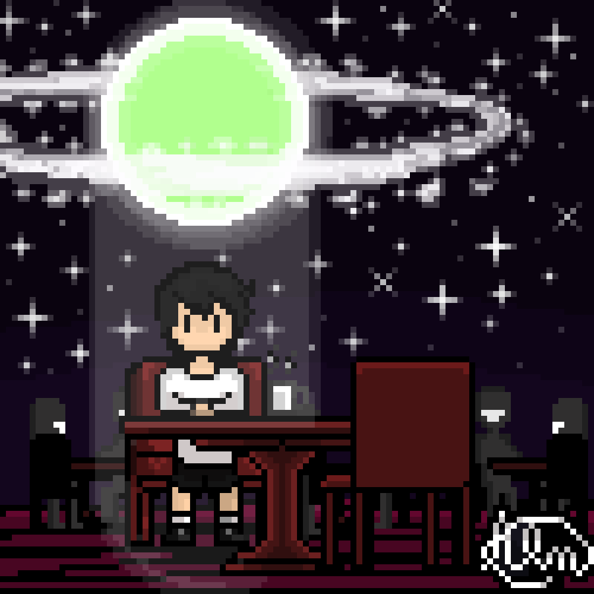
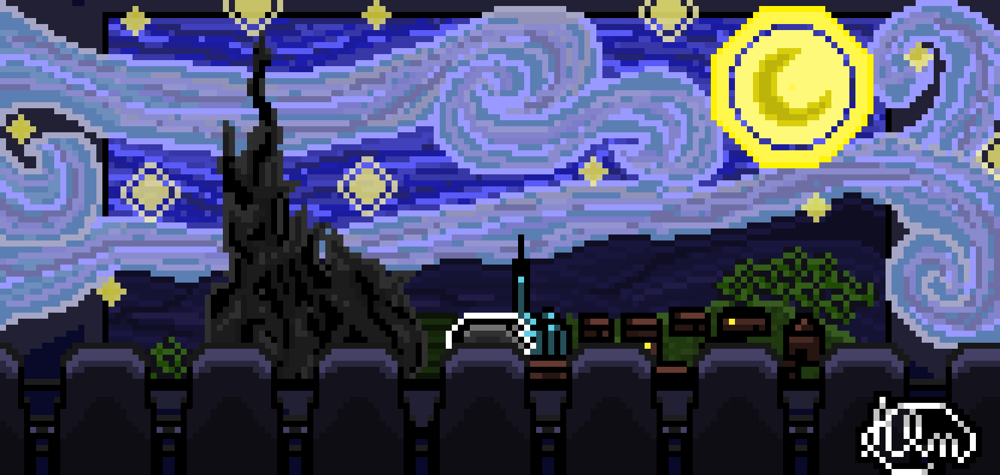

MINHAS ARTES
Eu gosto muito de fazer pixel art quando tenho tempo, por mais que seja simples, acredite é bem trabalhoso e admiro muito os grandes artistas de pixel arts.
Assim como outros tipos de artes pois é algo que exige bastante prática e dedicação.
As minhas são casuais então eu faço mais como um método de relaxar, já que me trás uma paz quando estou
desenhando e ouvindo alguma música ou podcast.

